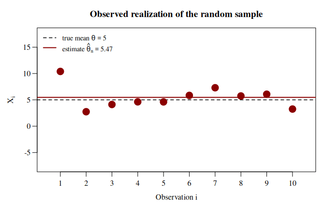
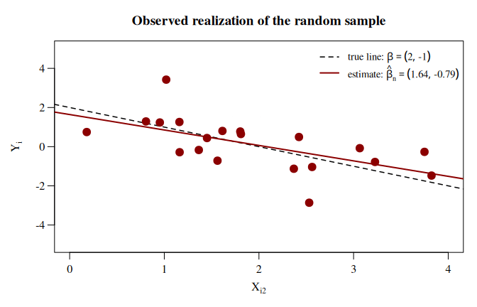
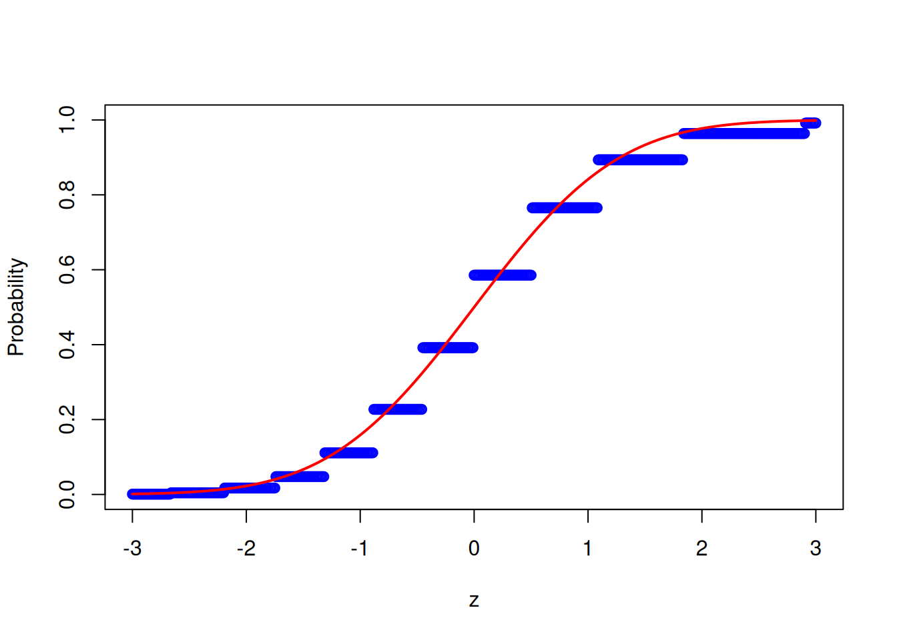
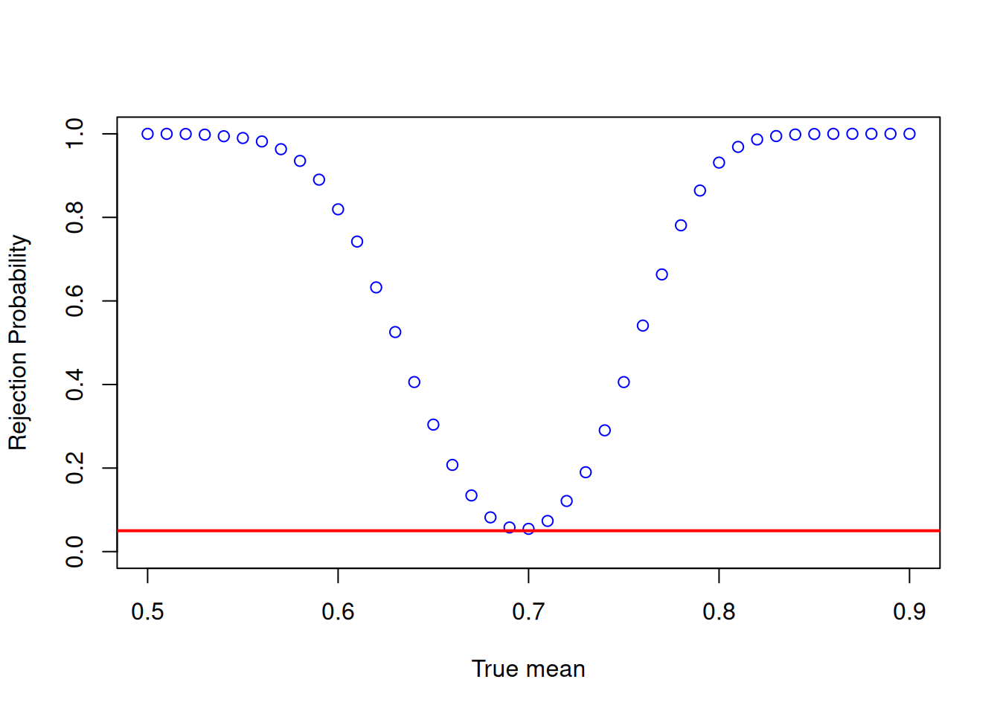

6 Monte Carlo Simulations
6.1 Some Important Concepts
6.1.1 Random Sample
Let \[ \{X_1, X_2, \ldots, X_n\} \] denote the so-called (i.i.d.) random sample. The random sample is a collection of \(n\) random variables, where all random variables have the same distribution \(F_X\) \[ X_i\sim F_X\quad\text{for all}\quad i=1,\dots,n \] and where all random variables are independent of each other \[ X_i \independent X_j \quad \text{for all} \quad i \neq j. \]
- The sign \(\independent\) means independent of each other.
- The abbreviation i.i.d. stands for independent and identically distributed.
-
Normal distribution: \(F_X = \mathcal{N}(\mu_X, \sigma_X^2)\)
- \(\theta = E(X) = \mu_X\), or
- \(\theta = \operatorname{Var}(X) = \sigma^2_X\)
-
Chi-squared distribution: \(F_X = \chi^2_{\operatorname{df}}\)
- \(\theta = E(X) = \operatorname{df}\), or
- \(\theta = \operatorname{Var}(X) = 2\cdot \operatorname{df}\)
-
A distribution without a name: \(F_X\) is some unnamed distribution (most distributions have no name)
- \(\theta = E(X)\), or
- \(\theta = \operatorname{Median}(X)\), or
- \(\theta = p\text{-Quantile}(X)\)
-
A multivariate distribution: \(F_{YX}\) is the joint distribution of \((Y, X^\top) \in \mathbb{R}^{K+1}\)
- \(\theta = \beta\), the coefficient vector of the regression model \(Y_i = X_i^\top\beta + \varepsilon_i\)
6.1.2 Estimator
To estimate the unknown parameter value \(\theta\) we make use of an estimator which is simply a function of the random sample, \[ \hat{\theta}_n\equiv \hat{\theta}(X_1, X_2, \ldots, X_n). \]
Since estimators are defined as functions of random variables, they are themself random variables.
🔊 Estimators are Random Variables❗
Thus, to fully understand an estimator, we need to know its statistical properties of the estimator (i.e., its distribution or, at least its mean and its variance).
Observed data are just one observed realization of the random variables in the random sample \[ \{X_{1,\operatorname{obs}}, X_{2,\operatorname{obs}}, \ldots, X_{n,\operatorname{obs}}\}. \] Each such observed realization of the random sample yields a specific realization of the random estimator \(\hat{\theta}_n\) \[ \hat{\theta}_{n,\operatorname{obs}}\equiv \hat{\theta}(X_{1,\operatorname{obs}}, X_{2,\operatorname{obs}}, \ldots, X_{n,\operatorname{obs}}). \]
These arguments can be confusing because in practice we typically only have one data set (one realization of the random sample) and therefore only one realization of the estimator. But we could also think of all the other realizations of the data we could have obtained.
The following examples illustrate different types of random samples and estimators:
Let \[ \{X_1, \ldots, X_n\} \] be an i.i.d. random sample with \(X_i \sim F_X\) for all \(i = 1, \dots, n\).
We estimate the unknown mean \(\theta \equiv \mu_X\) by the sample mean \[ \hat\theta_n \equiv \hat\mu_n = \frac{1}{n}\sum_{i=1}^n X_i. \]
The following code generates one realization of the random sample. The fixed seed, set.seed(321), makes the pseudo-random numbers reproducible.
The observed realization, stored in sample_X, \[
\{X_{1,\operatorname{obs}}, \ldots, X_{n,\operatorname{obs}}\} = \{10.39,\ 2.75,\ \dots,\ 3.25\}
\] yields the estimate \[
\hat{\theta}_{n,\operatorname{obs}} = \frac{1}{n}\sum_{i=1}^n X_{i,\operatorname{obs}} = 5.47.
\]
A new sample yields a new estimate. The animation shows the observed sample (first frame, red) followed by further realizations of the random sample and of the estimator \(\hat\theta_n\) (blue).

Summary:
The data change from realization to realization, and so does the estimate. That is, \(\hat\theta_n\) is a random variable, and \(\hat{\theta}_{n,\operatorname{obs}}\) is just one of its realizations.
The realizations of \(\hat\theta_n\) lie close to the (usually unknown) true mean \(\mu_X = 5\). That is, the distribution of \(\hat\theta_n\) is concentrated around \(\mu_X\). This concentration increases with the sample size \(n\).
Let \[ \{(Y_1, X_1^\top), \ldots, (Y_n, X_n^\top)\} \] be an i.i.d. random sample with \((Y_i, X_i^\top) \sim F_{YX}\) for all \(i = 1, \dots, n\), where
\(Y_i = X_i^\top \beta + \varepsilon_i\) is the outcome, and
\(X_i \in \mathbb{R}^K\) is the vector of predictors of observation \(i\).
We estimate the unknown coefficient vector \(\theta \equiv \beta\) by the OLS estimator \[ \hat\theta_n \equiv \hat\beta_n = \left(X^\top X\right)^{-1} X^\top Y, \] where \[ X = \begin{pmatrix} X_1^\top \\ X_2^\top \\ \vdots \\ X_n^\top \end{pmatrix} = \begin{pmatrix} X_{11} & X_{12} & \cdots & X_{1K} \\ X_{21} & X_{22} & \cdots & X_{2K} \\ \vdots & \vdots & \ddots & \vdots \\ X_{n1} & X_{n2} & \cdots & X_{nK} \end{pmatrix} \quad\text{and}\quad Y = \begin{pmatrix} Y_1 \\ Y_2 \\ \vdots \\ Y_n \end{pmatrix} \] are the \(n \times K\) matrix of predictors and the \(n \times 1\) vector of outcomes.
The following code generates one realization of the random sample and computes the estimate.
The observed realization, stored in Y and X, \[
\{(Y_{1,\operatorname{obs}}, X_{1,\operatorname{obs}}^\top), \ldots, (Y_{n,\operatorname{obs}}, X_{n,\operatorname{obs}}^\top)\} = \{(-1.48,\ 1,\ 3.82),\ \dots,\ (-1.04,\ 1,\ 2.56)\}
\] yields the estimate, stored in beta_hat, \[
\hat{\theta}_{n,\operatorname{obs}} = (1.64,\ -0.79)^\top.
\]
A new sample yields a new estimate. The animation shows the observed sample (first frame, red) followed by further realizations of the random sample and of the estimator \(\hat\theta_n\) (blue).

Summary:
The data change from realization to realization, and so does the estimate. That is, \(\hat\theta_n\) is a random vector, and \(\hat{\theta}_{n,\operatorname{obs}}\) is just one of its realizations.
The estimated regression lines lie close to the (usually unknown) true line with \(\beta = (2, -1)^\top\). That is, the distribution of \(\hat\theta_n\) is concentrated around \(\beta\). This concentration increases with the sample size \(n\).
6.1.3 Consistency, Bias, and Variance of Estimators
Since an estimator is a random variable, it has a distribution and (typically) a mean and a variance.
We call an estimator unbiased if \[ E\left(\hat{\theta}_n\right) = \theta. \]
That is, the average value of the estimator over all the hypothetical data sets we could have obtained is equal to \(\theta\).
Unbiasedness can hold for any sample size \(n\) and is therefore called a small-sample property. There are, however, estimators that are biased in small samples, i.e. \[ E\left(\hat{\theta}_n\right) \neq \theta\quad\text{for a fix sample size}\quad n. \] For such estimators, we want them to be at least asymptotically unbiased, i.e. \[ E\left(\hat{\theta}_n\right) \to \theta\quad\text{as}\quad n\to\infty. \]
Unbiasedness as well as asymptotic unbiasedness does not imply that the realizations of \(\hat{\theta}_n\) are necessarily close to \(\theta.\)
Indeed, the estimator may have a large variance \[ \operatorname{Var}(\hat\theta_n)=E\left(\left(\hat\theta_n - E(\hat\theta_n)\right)^2\right)=\text{large} \] thus the deviations of \(\hat{\theta}_n\) from its mean may be large, even in large samples \((n\to\infty).\)
Therefore, besides (asymptotic) unbiasedness, we want estimators to be consistent.
That is, the realizations of a consistent estimator \(\hat{\theta}_n\) concentrate around the true parameter value \(\theta\) for large sample sizes \((n \to\infty).\)
An estimator \(\hat\theta_n\) that is asymptotically unbiased and whose variance vanishes, i.e., \[ E\left(\hat\theta_n\right) \to \theta \quad\text{and}\quad \operatorname{Var}\left(\hat\theta_n\right) \to 0 \quad\text{as}\quad n \to \infty, \] is (weakly) consistent.
Proof. We use Chebyshev’s inequality: \[ P\left(\left|Z - E(Z)\right| > c\right) \leq \frac{\operatorname{Var}(Z)}{c^2}, \] for any random variable \(Z\) with finite variance and any \(c > 0.\)
We want to show that \[\begin{align*} &P\left(\left|\hat{\theta}_n - \theta\right| > \varepsilon\right) \rightarrow 0 \quad\text{as}\quad n \to \infty. \end{align*}\]
We start by considering \(\left|\hat\theta_n - \theta\right|\) and adding a zero \(0=-E\left(\hat\theta_n\right)+E\left(\hat\theta_n\right)\colon\) \[\begin{align*} \left|\hat\theta_n - \theta\right| & = \left|\hat\theta_n -E\left(\hat\theta_n\right)+E\left(\hat\theta_n\right) - \theta\right| \end{align*}\]
The triangle inequality \((|a+b|\leq|a|+|b|)\) yields: \[\begin{align*} \left|\hat\theta_n - \theta\right| & \leq \left|\hat\theta_n - E\left(\hat\theta_n\right)\right| + \left|E\left(\hat\theta_n\right) - \theta\right|. \end{align*}\]
Let \(\varepsilon > 0\).
Since \(E(\hat\theta_n) \to \theta,\) which is equivalent to \(|E(\hat\theta_n)-\theta| \to 0,\) there is an \(n_0\) such that \(|E(\hat\theta_n) - \theta| \leq \varepsilon/2\) for all \(n \geq n_0\).
As we are anyway interested in large sample sizes \(n\to\infty,\) we can continue with considering sufficiently large sample sizes \(n\geq n_0,\) for which \[\begin{align*} \left|\hat\theta_n - \theta\right| & \leq \left|\hat\theta_n - E\left(\hat\theta_n\right)\right| + \frac{\varepsilon}{2}. \end{align*}\]
Now suppose the event \(|\hat\theta_n - \theta| > \varepsilon\) occurs. Then, by the above inequality, \[ \varepsilon < \left|\hat\theta_n - \theta\right| \leq \left|\hat\theta_n - E\left(\hat\theta_n\right)\right| + \frac{\varepsilon}{2} \quad\Rightarrow\quad \left|\hat\theta_n - E\left(\hat\theta_n\right)\right| > \frac{\varepsilon}{2}. \] That is, whenever \(\hat\theta_n\) deviates from \(\theta\) by more than \(\varepsilon\), it deviates from its mean \(E(\hat\theta_n)\) by more than \(\varepsilon/2\). Thus, the first event is contained in the second one, \[ \left\{\left|\hat\theta_n - \theta\right| > \varepsilon\right\} \subseteq \left\{\left|\hat\theta_n - E\left(\hat\theta_n\right)\right| > \frac{\varepsilon}{2}\right\}, \] and therefore has a smaller (or equal) probability. Together with Chebyshev’s inequality for \(Z = \hat\theta_n\) and \(c = \varepsilon/2\), this yields \[ P\left(\left|\hat\theta_n - \theta\right| > \varepsilon\right) \leq P\left(\left|\hat\theta_n - E\left(\hat\theta_n\right)\right| > \frac{\varepsilon}{2}\right) \leq \frac{\operatorname{Var}\left(\hat\theta_n\right)}{(\varepsilon/2)^2} = \frac{4 \operatorname{Var}\left(\hat\theta_n\right)}{\varepsilon^2}. \] Since \(\operatorname{Var}(\hat\theta_n) \to 0\), the right-hand side, and thus \(P(|\hat\theta_n - \theta| > \varepsilon)\), converges to zero as \(n \to \infty\). Since \(\varepsilon > 0\) was arbitrary, \(\hat\theta_n \rightarrow_P \theta\). \(\square\)
(Asymptotic) unbiasedness and consistency are the two minimum quality requirements we want any estimator to have.
But, for doing statistical hypothesis testing and for constructing confidence intervals, we actually need more: we need to know the distribution of the estimator \(\hat\theta_n,\) at least for large sample sizes \((n \to\infty).\)
Problem: Generally, the distribution of \[ \hat\theta_n = \hat\theta(X_1, X_2, \ldots, X_n), \] depends on the distribution of the random variables in the random sample \[ \{X_1, X_2, \ldots, X_n\}; \] however, we typically do not know this distribution.
Luckily, we can make use of the Central Limit Theorem \[ \sqrt{n}\left(\hat{\theta}_n - \theta \right) \rightarrow_D N\left(0,\operatorname{AVar}\left(\hat{\theta}_n\right)\right), \] where (using that \(\operatorname{Var}(aX+b)=a^2\operatorname{Var}(X)\)) \[\begin{align*} \operatorname{AVar}\left(\hat{\theta}_n\right) &=\lim_{n\to\infty}\operatorname{Var}\left(\sqrt{n}\left(\hat{\theta}_n - \theta \right)\right)\\[2ex] &=\lim_{n\to\infty}\left(\sqrt{n}\right)^2\operatorname{Var}\left(\hat{\theta}_n - \theta\right)\\[2ex] &=\lim_{n\to\infty}n\operatorname{Var}\left(\hat{\theta}_n \right) \end{align*}\] is called the asymptotic \((n\to\infty)\) variance of \(\hat{\theta}_n.\)
Note that the definition of the asymptotic variance requires an appropriate scaling by \(n,\) since the variance of any consistent estimator \(\hat\theta_n\) degenerates to zero in large sample \((n\to\infty).\)
The central limit theorem assures that the distribution of the appropriately centered (by \(\theta\)) and scaled (by \(\sqrt{n}\)) estimator \(\hat{\theta}_n\) tends become a normal distribution in large sample sizes \((n\to\infty).\)
Take Away Message: If the Central Limit Theorem is applicable, we know that \[ \sqrt{n}\left(\hat{\theta}_n - \theta \right) \rightarrow_D N\left(0,\operatorname{AVar}\left(\hat{\theta}_n\right)\right), \]
- For any consistent estimator \(\hat\theta_n,\) the distribution will degenerate to the point-value \(\theta\) as \(n\to\infty.\)
and asymptotically normally distributed:
These properties only hold in the limit and are called large-sample properties. Knowing the large-sample distribution is particularly useful because it allows us to test hypotheses and obtain confidence intervals. For example, let \(\hat{V}_{\theta}\) be a consistent estimator of \(V_{\theta}\). Then \[P\left( \theta \in \left[ \hat{\theta}_n - 1.96\frac{\hat{V}_{\theta}}{\sqrt{n}} , \, \hat{\theta}_n + 1.96\frac{\hat{V}_{\theta}}{\sqrt{n}} \right] \right) \rightarrow 0.95\] and the interval \[\left[ \hat{\theta}_n - 1.96\frac{\hat{V}_{\theta}}{\sqrt{n}} , \, \hat{\theta}_n + 1.96\frac{\hat{V}_{\theta}}{\sqrt{n}} \right]\] is a \(95\%\) confidence interval for \(\theta\). That is, looking at all hypothetical data sets, \(\theta\) is in \(95\%\) of the confidence intervals. Notice that in different data sets, we get different intervals, but the parameter \(\theta\) does not change.
The \(95\%\) coverage probability only holds in the limit, but for any fixed sample size \[P\left( \theta \in \left[ \hat{\theta}_n - 1.96\frac{\hat{V}_{\theta}}{\sqrt{n}} , \, \hat{\theta}_n + 1.96\frac{\hat{V}_{\theta}}{\sqrt{n}} \right] \right) \] could be much smaller than \(95\%\). This actual coverage probability is unknown in applications.
The goal of Monte Carlo simulations is typically to investigate small sample properties of estimators, such as the actual coverage probability of confidence intervals for fixed \(n\). To do so, we can simulate many random samples from an underlying distribution and obtain the realization of the estimator for each sample. We can then use the realizations to approximate the actual small sample distribution of the estimator and check properties, such as coverage probabilities of confidence intervals. Of course, the properties of the estimator depend on which underlying distribution we sample from.
6.2 Simple Simulation Example
As a simple example, let \(\{X_1, X_2, \ldots, X_n\}\) be a random sample from some distribution \(F_X\). Define \(\theta = E(X)\) and let \[\hat{\theta}_n = \bar{X}_n = \frac1n \sum_{i=1}^n X_i\] and \[s_n = \sqrt{\frac{1}{n-1} \sum_{i=1}^n \left(X_i - \bar{X}_n\right)^2} \] Applications of a Law of Large Numbers and a Central Limit Theorem for iid data imply that \[\hat{\theta}_n \rightarrow_P \theta,\] \[s_n \rightarrow_P sd(X),\] and \[\sqrt{n}\left(\hat{\theta}_n - \theta \right) \rightarrow_D N(0,Var(X)) \] The previously discussed confidence interval for \(E(X)\) is \[\left[ \bar{X}_n - 1.96\frac{s_n}{\sqrt{n}} , \, \bar{X}_n + 1.96\frac{s_n}{\sqrt{n}} \right]\]
6.3 Consistency
The estimator \(\hat{\theta}_n\) is weakly consistent if for any \(\varepsilon > 0\) \[P\left( \left|\hat{\theta}_n - \theta \right| > \varepsilon \right) \rightarrow 0\] or \[P\left( \left|\hat{\theta}_n - \theta \right| \leq \varepsilon \right) \rightarrow 1\] That is, as long as \(n\) is large enough, \(\hat{\theta}_n\) is in an arbitrarily small neighborhood around \(\theta\) with arbitrarily large probability.
To illustrate this property, let’s return to the example with sample averages and expectations. Let \(\{X_1, X_2, \ldots, X_n\}\) be a random sample from the Bernoulli distribution with \(p = P(X_i = 1) = 0.7\). Let \(\theta = E(X) = p\) and let \(\hat{\theta}_n\) be the sample average. We start with a sample size of 20 and set the parameters:
n <- 20
p <- 0.7
theta = pWe now want to take \(S\) random samples and obtain \(S\) corresponding sample averages, where \(S\) is ideally a large number. The larger \(S\), the more precise our results will be. It is also useful to set a seed.
Now for some \(\varepsilon > 0\), we can check \(P\left( \left|\hat{\theta}_n - \theta \right| \leq \varepsilon \right)\):
We can also calculate this probability for different values of \(\varepsilon > 0\). I use a loop here for readability, but you can try using matrices on your own. Since I want to repeat the following steps for different sample sizes, it is useful to first define a functions that performs all operations:
We can now call the function for any \(n\), \(S\), \(p\), and a vector containing different values for \(\varepsilon\). For each of these values, the function then returns a probability.
all_eps = seq(0.01, 0.5, by= 0.01)
probs <- calc_probs_consistency(n = 20, S = 1000, p = 0.7, all_eps = all_eps)Next, we can plot all probabilities:
We can see from the plot that \(P\left( \left|\hat{\theta}_n - \theta \right| \leq \varepsilon \right)\) is quite small for small values of \(\varepsilon\). Consistency means that for any \(\varepsilon > 0\), the probability approaches \(1\) as \(n \rightarrow \infty\). We can now easily change the sample size and see how the results change. For example, take \(n=200\):
6.4 Asymptotic Normality
We know from the Central Limit Theorem that \[\frac{\sqrt{n}(\bar{X}_n - E(X))}{s_n} \rightarrow_D N(0,1)\] where \(s_n\) is the sample standard deviation. Convergence in distribution means that the distribution of the normalized sample average converges to the distribution function of a standard normal random variable.
Again, we can use the previous simulation setup to illustrate this property. To do so, we calculate \[P\left(\frac{\sqrt{n}(\bar{X}_n - E(X))}{s_n} \leq z\right)\] and compare it to the standard normal cdf evaluated at \(z\). We then plot the results as a function of \(z\). Just as before, we define a function that calculates the probabilities:
We can now plot the results for different sample sizes such as
z = seq(-3,3,by=0.01)
probs <- calc_probs_asymp_normal(n = 20, S = 10000, p = 0.7, z = z)
plot(z,probs,ylim = c(0,1),xlab="z",ylab="Probability", col = 'blue')
lines(z, pnorm(z, 0, 1), col = 'red',lwd = 2)
or
6.5 Testing
Let \(\{X_1, X_2, \dots, X_n\}\) be a random sample and define \(\mu = E(X)\). Suppose we want to test \(H_0: \mu = \mu_0\) where \(\mu_0\) is a fixed number. To do so, define \[t = \frac{\sqrt{n}(\bar{X}_n - \mu_0)}{s_n} \] An immediate consequence of the Central Limit Theorem is that if \(H_0\) is true then \[t = \frac{\sqrt{n}(\bar{X}_n - \mu_0)}{s_n} = \frac{\sqrt{n}(\bar{X}_n - \mu)}{s_n} \rightarrow_D N(0,1) \] and therefore \[P\left(|t| > 1.96 \mid \mu = \mu_0\right) \rightarrow 0.05\] Hence, if we reject when \(|t|>1.96\), we only reject a true null hypothesis with probability approaching 5%.
If the null hypothesis is false, we can write \[t = \frac{\sqrt{n}(\bar{X}_n - \mu_0)}{s_n} = \frac{\sqrt{n}(\bar{X}_n - \mu)}{s_n} + \frac{\sqrt{n}(\mu - \mu_0)}{s_n} \rightarrow_D N(0,1) \] Since in this case \(\sqrt{n}|\mu - \mu_0| \rightarrow \infty\), it follows that \[P\left(|t| > 1.96 \mid \mu \neq \mu_0\right) \rightarrow 1\] That is, we reject a false null hypothesis with probability approaching \(1\). However, for a small sample size, the rejection probability is typically much smaller when \(\mu_0\) is close to \(\mu\).
We now want to calculate the small sample rejection probabilities using Monte Carlo simulations. We could either vary \(\mu_0\) (the value we test) or \(\mu\) (the true mean). We take the latter because we can then plot the power functions you have seen in the theoretical part of the class to illustrate the results.
We work with the Bernoulli distribution again and define a function that calculates certain rejection probabilities.
We can now call the function for different values of \(\mu\) and plot the rejection probabilities
mus = seq(0.5,0.9,by=0.01)
probs <- calc_rej_probs(n = 200, S = 10000, mus = mus, mu0 = 0.7, alpha = 0.05)
plot(mus,probs,ylim = c(0,1),xlab="True mean",ylab="Rejection Probability", col = 'blue')
abline(h=0.05, col = 'red',lwd = 2)
Think about how the figure changes as the sample size increases.
6.6 Exercises VI
Exercise 1:
Suppose \(X \sim U[0,2]\) where \(U[0,2]\) denotes the uniform distribution on the interval \([0,2]\). It is easy to show (make sure to verify this!) that \(E(X) = 1\). Now repeat the following two steps at least \(1,000\) times:
- Take a random sample from the distribution of \(X\) with sample size \(n = 20\).
- Calculate the sample average and a \(95\%\) confidence interval for \(E(X)\) using the sample from (1).
You should now have \(1,000\) sample averages and \(1,000\) confidence intervals, which you can use to answer the following questions:
What is average of your \(1,000\) sample averages?
What is the standard deviation of your \(1,000\) sample averages?
How many times is \(E(X)\) in the \(95\%\) confidence interval?
Exercise 2:
In this exercise, we use the Monte-Carlo method to approximate the number pi. To do so, randomly choose n points from a square and count how many of those draws lie inside the square’s incircle. Based on this results and the formula for the area of a circle, calculate an approximation of pi.
Create a plot that portrays your findings in an intuitive manner, such as histograms, density plots, boxplots, etc.) –>